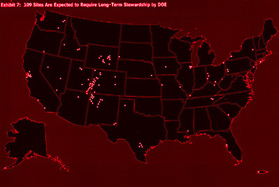
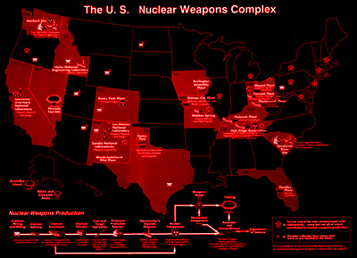
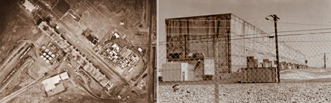
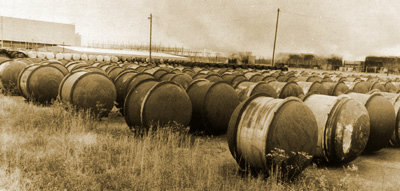
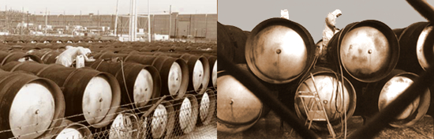
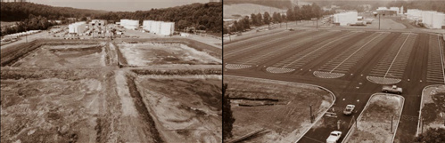
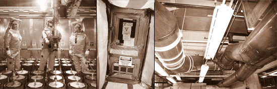
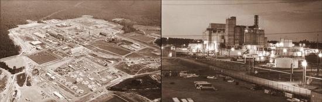
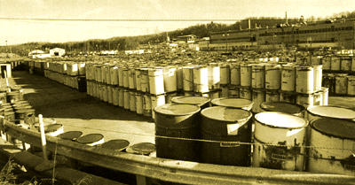

|

The DOE is in charge of cleaning up these sites. All of this waste from these sites are the majority of the "federal waste," of which a company like WCS can now import over 162 million cubic feet of to Texas for disposal. Federal Waste additionally includes decommissioned nuclear submarines and even some waste imported from other countries. Click for readable PDF [1.8 MB] |
The Department of Energy is caretaker of all sites in the United States which were involved in nuclear weapons manufacturing, research and development during World War II and through the Cold War. In 1942, the Army Corp of Engineers began to work on nuclear weapons at its Manhattan Engineer District, which took the more popular name "The Manhattan Project." This produced bombs for the initial testing of nuclear weapons and notably the two bombs used on the Japanese mainland at the end of WW II, nicknamed "Little Boy" [Hiroshima] and "Fat Man" [Nagasaki].
Soon afterward, the Atomic Energy Commission was created (with the Atomic Energy Act of 1946) and assumed leadership of the development and production of nuclear weapons. The preliminary network of small scattered private facilities was soon transformed into a complex of large centralized production facilities under the government agency. The stockpiling of nuclear materials and weapons required an extensive manufacturing process that generated enormous amounts of radioactive waste and considerable environmental contamination. In addition to the nuclear fuel chain which is discussed in the section on weapons and power plants, plutonium production facililities and other factories were needed to produce hydrogen weapons, and other plants were needed to create weapons components such as neutron triggers and tritium boosters. During the Cold War, the United States operated a total of 14 plutonium-production reactors, creating approximately 100 metric tons of plutonium for its tens of thousands of nuclear warheads.
The United States had detonated 1,054 nuclear weapons at its test sites in Nevada and around islands in the Pacific, punching holes in the atmosphere and distributing fallout downwind upon unsuspecting communities.* The Nevada Test Site hosted 904 of the these test explosions. The environmental consequences of the various manufacturing processes were also not a concern of the government during weapons development. As a result, each site involved in weapons manufacturing remained riddled with groundwater contamination, skyrocketting local cancer rates, and massive amounts of poorly managed radioactive waste often buried in unlined trenches.
Redundant facilities ensured that nuclear weapons production would not be interrupted by a problem at any single site. By the mid-1950s, all of the major weapons complex facilities had been established. Budgetary considerations and an abundance of formerly scarce nuclear materials resulted in a shift from redundant sites to single-mission sites and a shutdown of some sites and materials production facilities in the mid-1960s. In 1975, the Atomic Energy Commission was dissolved into the short-lived Energy Research and Development Administration (ERDA) which was just two years later in 1977 incorporated into the Department of Energy. As the Cold War continued, the Reagan administration continued to push for a larger nuclear stockpile even as the hazards of the arms race became even more apparent; several of these weapons production facilities were modernized and restarted. George Bush Sr. continued this policy, yet due to increasing public relations pressure and the collapse of the former Soviet Union, declared an end to the Cold War and nuclear weapons production was soon brought to a close, and most of the sites were seen as obsolete. In 1989, an office of Environmental Management within the jurisdiction of the Department of Energy was created, which would oversee the mothballing and "long-term stewardship" of the major legacy weapons sites and constituent facilities. In Texas, this meant Pantex and a small few of the uranium mining sites which the Atomic Energy Commission had utilized in its day.
Throughout the United States, the Department of Energy is responsible for over 91 sites through the Office of Environmental Management. These sites produce low-level radioactive waste ranging from low and high radioactivity soil which has been contaminated by leaking and operations, to previously buried unclassified waste which is not cataloged at all, to reactor vessels and components from plutonium production facilities which are not considered high-level waste merely upon the statutory technicalities of waste classification.
The Office of Environmental Management's mission was to undertake cleanup operations
of these facilities, which in many cases had been done with questionable efficiency and method.
At the time this is being written, George W Bush as president
has used his administration and the September 11th 2001 terrorist attack to deliver to his
nuclear industry campaign donors renewed subsidies and a re-energized
nuclear weapons complex, which will ensure that the lessons of the past at these
facilities will be ignored, and that the nuclear arsenal of the United States will be
"modernized" for the 21st century. Meanwhile, even supporters of the republican
party who are "in the know" have spoken out in protest. Without exception, all
of these sites have leaked into the environment with an endless litany of horror
stories accompanying them. The DOE provides thier official overview of the history
of this complex in a series of books which are currently out of print, yet are now
available online. They are named "Linking Legacies" and "Closing the Circle on the
Splitting of the Atom," and are available at a DOE website named
The Legacy Story:
The History of the US Nuclear Weapons Complex. These books do not by any
means sufficiently discuss the social injustice or violations of health and
safety at these facilities, but does provide an organizational background
in how the complex operates, and demonstrate the scope of cleanup operations.
|

DOE sites performed a wide array of functions in production of weapons of mass destruction during the cold war. Federal waste destined for Texas comes from the nuclear weapons program. Under plans for the US military, some facilities are to be re-activated to again produce thermonuclear weapons- violating treaties. Click for readableable map and info - PDF [2.5 MB] |
Located on the Columbia River, Hanford is the largest site in the DOE nuclear weapons complex, with many separate designated areas. Established in 1942, the site not only houses facilities which fabricated reactor fuel, but also produced uranium-238 and lithium targets for use in the production of plutonium and tritium, and many other tasks. The site was fully equipped for plutonium production operations, operating 9 reactors and 5 chemical separation facilities (which are also called "canyons"). All sites at Hanford are obscurely referenced by alphanumerical codes and occassionally by acronyms. Hanford's 300 Area was involved in uranium fuel and component fabrication. Hanford reactors were named the B, D, F, H, DR, C, KW, KE, and N Reactors. Hanford performed chemical separation in the 200 East and West Areas at the PUREX, REDOX, T and B Plants, and 231-Z Plant. The PUREX, UO3 Plant, REDOX, and U Plant performed uranium recycling. The 234-5 Plutonium Finishing Plant produced plutonium weapons components and also recycled plutonium.
Hanford's B reactor was the first plutonium production reactor built in the world, and operated from 1944-1968. It was the source of plutonium for the historic "Trinity" test, and Nagasaki "Fat Man" weapon. The nearby T Plant canyon was the world's first reprocessing canyon and second large-scale reprocessing facility, which dissolved the irradiated fuel rods in acid to chemically extract the plutonium. It continued reprocessing until 1956. The Hanford N Reactor, which has a graphite core, also produced much plutonium at Hanford; was the last to be built at the site, and was shut down permanently in 1986. There were a total of 14 plutonium-production reactors the United States operated during the Cold War, creating approximately 100 metric tons of plutonium for its tens of thousands of nuclear warheads.
| 
Hanford has held 5 chemical separation facilities (or "canyons") that function to separate and isolate plutonium the from spent fuel irradiated within the onsite reactors. These facilities require billions of dollars to build. On the left, an aerial view of the "B" Canyon, and on the right, the front of the "T" Canyon. [images from the US DOE] |
Onsite waste disposal operations include Trench 94, which holds the gigantic cutout hulls of decommissioned nuclear submarines. After the spent fuel was removed from these hulls, they were then used to store other radioactive wastes. Hanford also has onsite million-gallon double-walled tanks which hold high-level waste from the site's reactor operations. The older leaky single-walled tanks were replaced in the 1990's with double-walled tanks the DOE says will last for 50-years. Mixing pumps are utilized inside the tanks to stir the waste slurry inside, in an attempt prevent the buildup of explosive gases. Robotic arms are employed to break up and remove sludge and solidified waste inside. Other high-level wastes onsite, such as corroding spent fuel elements from the N-Reactor, are kept in unlined concrete pools, creating highly contaminated and irradiated wastewater. Hanford later became a waste disposal site for the various facilities around the DOE complex, and also accepted waste from outside of the DOE. After the passage of the Low-Level Radioactive Waste Policy Amendments Act, it became a host disposal site for the Northeast Interstate Compact. In recent years, waste intake has been limited to accepting only waste from the Northeast Compact, and only Class A and NORM waste from states outside of the Compact agreement. At this point, limiting waste intake has been too little, too late- irreparable environmental damage has been done all over the Hanford site in the name of Cold War rhetoric.
Pollution at Hanford has reached legendary proportions. The site was a focus during a campaign by INFACT from 1983-1991, critical of General Electric's involvement in nuclear weapons production. An INFACT documentary exposéd a neighboring stretch of highway which had been nicknamed "Death Mile" due to the large number of deaths and incidents of cancers, tumors, lymphomas, and other illnesses. When GE managed Hanford, it knowingly released extensive amounts of radiation into the air and water, and 27 of 28 neighboring families had suffered deadly cancers or birth defects. On one occassion, the company had released a huge cloud of radioactive iodine into the atmosphere merely to see if the Soviets could track it on radar. It included interviews with residents and the widows of workers at the plant who told thier stories of deteriorating health and mysterious secrecy surrounding the deaths of thier spouses. Some workers were so irradiated from thier exposure at the plant that thier bodies were taken by the company and disposed of as radioactive waste while thier widows were told nothing.
INFACT's video is named "Deadly Deception: General Electric, Nuclear Weapons and Our Environment." It can be found at some independent rental shops, or if you want a copy, you may order it from INFACT by clicking here. INFACT also released a companion book, "Bringing GE to Light: How General Electric Shapes Nuclear Weapons Policies for Profits," but unfortunately refuses to distribute this sort of other work from that campaign, merely stating that they are no longer working on that issue [since General Electric claimed to pull out of the nuclear weapons business by leaving Hanford, which it had been a part of for so many years, and the fact that INFACT's organized boycott was focused on that particular company- not the nuclear weapons complex as a whole, such as the "collective" of all the other companies involved in the big picture]. In essense Deadly Deception becomes reduced in some ways to a portfolio piece for INFACT, since they chose the short battle and caved into the industry early on. GE never really left the nuclear weapons industry, since it continued to create non-nuclear components. INFACT got alot of attention to generate public interest with Deadly Deception video, and could have done a great deal more with it, but dropped the ball, and later went after Joe Camel instead. Nonetheless, it is still worth seeing and showing to interested friends. Also look for another short film which toured theatres with INFACT's documentary called "Building Bombs." It has even more information about the Hanford site.
These site's began their activities in the early 1950's to place uranium enrichment plants
at dedicated locations. Previously, uranium was enriched at Rocky Flat's K-25 site, discussed later.
Their sole functions have been uranium enrichment, a process which takes natural uranium and processes it so that
the percentage of the fissionable type of uranium is sufficiently higher for use in bombs or reactors.
The process uses converter vessels with
porous barriers that concentrate uranium in a gaseous form by separating out the
atoms of uranium-235 from the more abundant uranium-238. Each of these single vessels is a stage in the larger
enrichment process- the more stages the uranium hexafluoride gas passes through, the higher its enrichment becomes.
Each of these plants use over 5,000 individual converter-vessel stages (the K-25 plant at Oak Ridge used 5,122 stages).
Today, Paducah has remained the primary facility, producing commercial reactor fuel, as the others have been shut down
(Portsmouth was a secondary plant for the complex,
and K-25 was the original prototype plant).
Highly enriched uranium
is procured, while unfissionable
depleted uranium remains as a waste product, both are output in gaseous form. 585,000 metric
tons of depleted uranium are stored in 46,000 cylinders in Ohio, Tennessee, and Kentucky; and make
up 70% of the DOE's "Materials in Storage" category. The DOE says that a two thirds of this comes from producing
fuel for commercial nuclear power plants.
[note: NYT 02-14-2005 reported "700,000 tons of depleted uranium, still mixed with fluorine and much of
it in decaying metal canisters, in Ohio, Kentucky and Tennessee"]
This material is conveniently used by the military as a weapon, which functionally turns out to actually be a means of
waste disposal on a widespread international basis.
| 
These oddly shaped metallic capsules contain tons of depleted uranium (DU) in a high temperature gaseous 'hexaflouride' form. |
[Note on Military Use of Depleted Uranium (DU): DU is stored at these sites in gaseous form, but it in metal form, it is one of the densest materials known. It's density and mass form warheads which can penetrate armored vehicles like tanks, but it also burns up on high impact- creating extremely high temperatures and burrowing a hole through the target. As it burns, the DU turns into a white powder form, which can travel downwind 60 miles in conditions such as Iraq. Even small particles of depleted uranium are extremely dangerous when inhaled or ingested. Not only is DU toxic, but is additionally radioactive. Alpha radiation, which it primarily emits, is generally only harmful when the emitting object is in contact with our skin or organs. Thus it is through ingestion or inhalation that DU can enter our bloodstream and become lodged in our bodies, causing cancer. Meanwhile, many U.S. veterans of Operation Desert Storm in 1991 have acquired "Gulf War Syndrome," and many who posed for photos atop Iraqi tanks covered in white DU powder died within 10 years. The US military actively denies that DU is a chemical weapon or has any toxic characteristics after usage, since it would incriminate them in violating the articles of the Geneva Convention. Since it does not fission like an H-bomb, it is not termed a nuclear weapon. The pentagon's estimate was about 320 tons (640,000 pounds) of DU dropped during the first war with Iraq (this is a count for just DU, and not the non-DU parts of the missile). Much more was used in Kosovo, Iraq, Afganistan, and elsewhere; and the US continues to use it today.]
This site has a dual function: it fabricates various nuclear components for the weapons, but it also houses operations for uranium enrichment. The K-25 Site, one of many areas at Oak Ridge, was the first site to house a gaseous-diffusion plant in 1947. Like other uranium enrichment plants that would come online in the early 1950s, K-25 stores depleted uranium hexaflouride waste gas onsite, and has about 5,000 of the 10-14 ton cylinders. K-25 also has 45 basement vaults intended for the storage of low-level radioactive waste and mixed waste, capable of storing some 63,000 drums.
| 
Like at Paducah and Portsmouth, uranium hexafluoride cylinders are also stored near the K-25 Plant, each containing 10 to 14 tons. Some of these units being 50 years old, ultrasound is used to evaluate the effects of external corrosion on the steel cylinders. Cylinders closest to the ground can experience accelerated corrosion. This hot gas is cooled with freon, and 88% of the USA's ozone depleting CFC's originate from leaks from Paducah. Over the years, enriched nuclear power plant fuel for commercial reactors has been all come from the enrichment facilities at Paducah, dispelling the industry's myth of "clean air through nuclear power." |
The Y-12 Site, another well-known facility at Oak Ridge, primarily formed depleted and enriched uranium metal into components for nuclear weapons and reactors, including fabrication of fuel rods. As with the uranium enrichment operations at K-25, Y-12's functions are primarily handled by another site, which is Rocky Flats. Y-12 also enriched lithium for use in tritium production (lithium must be enriched before it can be used as a target in a reactor to produce tritium for nuclear weapons). Surplus lithium deuteride (already enriched) was also recovered and recycled at Y-12. All of these operations at Y-12 took place primarily at the COLEX and ELEX facilities.
After lithium enrichment stopped in 1962, some 35,000 areas were contaminated with mercury and airborne mercury vapor. Large amounts of mercury are used in this task, and many tons were released at the site during these operations. White Oak Creek, which runs through the Oak Ridge site, drains into the Clinch River, carrying with it fission products like strontium-90 and cesium-137, but also hazardous materials like PCBs into the river. The DOE constructed a sediment-retention dam, but it wasn't until 1992 (much too late) and only partially effective. Oak Ridge also operates a radioactive and hazardous waste incinerator [TSCA Incinerator] which is licensed by the EPA to burn waste at the site.
| 
Before and after photos of Rocky Flats "cleanup." Like at many sites, wastewater was often directed into ponds to evaporate, where it contaminated the groundwater with toxic chemicals and radionuclides. Additionally, like many sites the DOE have remediated, it's debatable whether much remediated at all- at the cubical pond area above, the existing water was merely treated, drained out, and afterward the area was filled and paved over with a giant parking lot. The DOE presents this as an example of thier cleanup efforts, but just as in the South Texas mining areas groundwater and aquifer pollution was ignored, seen as too costly to consider. Additionally, they use terms such as "greenfields" to describe remediated areas, where the notorious supposedly "impermeable" clay (a phrase used at many nuclear sites) is used to cap the waste, covered with a bit of topsoil. |
SRS:Hodges: The 34 metric tons of plutonium under debate was left from the production of nuclear weapons, and much of it is stored at the defunct Rocky Flats Arsenal in Colorado, which is scheduled to be dismantled by 2006.
| 
Rocky Flats: On the left, workers repair a hoist above surplus plutonium stored in floor canisters in the X-Y retrieval room in Building 707. Middle photo taken at Building 776/777: a sealed door to an "infinity room," where alpha radiation from previous plutonium operations is still too high to be monitored with standard equipment- estimated at almost 25,000 times natural background. On the right, ventilation ducts used to remove dusts, oxides, and smoke from gloveboxes in the pyrochemistry areas. Buildup of plutonium can actually pose a fission-criticality threat, and the buildup in these ducts is close to the limit for such a threat. |
The Savannah River Site (SRS) is very similar to the Hanford site, in that it has had a wide variety of nuclear weapons factories located in one spot, making it almost self-sufficient from the rest of the DOE complex.
The R, P, K, L, and C Reactors were capable of performing the tasks of plutonium and tritium production. The F Canyon Complex performed the chemical separation of plutonium from irradiated reactor fuel, and the H Canyon Complex was involved in the recycling of scrap uranium through chemical separation- both plants being very similar to their counterpart canyons described in the section on the Hanford site. The site's 300 M Area manufactured uranium fuel and targets from both DU and highly-enriched uranium, much like Rocky Flats. The 230H tritium facility isolated tritium from irradiated lithium targets, recycled surplus tritium back into the tritium 'feed,' and then produced tritium components from them. A plant dedicated for heavy water operations recovered tritium and deuterium out of heavy water.
| 
On the left, The Canyon F chemical separation facility complex. On the right, the site's vitrification plant. As big as these look, they make up a small part of the Savannah River Site. |
Due to the plutonium processing capabilities at the site, SRS has been involved in producing Mixed Oxide Fuel (also called MOx fuel) for experimental reactors capable of testing this new fuel. MOx fuel is composed of both uranium oxide and plutonium oxide powders. MOx fuel is frowned upon as a means of dealing with the plutonium predicament for two reasons. Plutonium not only burns hotter and can be more dangerous to use in reactor fuel, it also simply produces more waste and plutonium when used in a reactor. Another process which instead immobilizes plutonium in a glass form, called vitrification, is favored since it has been proven as effective in preventing the proliferation of plutonium. The process makes the plutonium extremely difficult to extract.
SRS has been looking into both options- however, on recommendation from the DOE Inspector General, vitrification has been shelved to an extent due to the cost involved, in favor of unvitrified onsite storage of surplus plutonium. Onsite waste currently includes approximately 35 million gallons of liquified waste stored in 49 underground tanks. Ed Lyman, president of the Nuclear Control Institute said, "There is no basis at all to conclude that it is safe to dispose of this in concrete, which is a water-laden solid. To simply dump it at the Savannah River Site instead of processing it and disposing of it responsibly is an outrage."
In 2002, a proposal to import 34 metric tons of plutonium from Rocky Flats for storage at SRS was underway, which, coupled with the decision to dispose rather than vitrify, caused quite a controversy. Originally, this waste was to come to SRS for vitrification, so that it could be slated for disposal elsewhere. South Carolina Governor Jim Hodges said, "The Department of Energy has broken promises, offered no assurances and left few options. Once plutonium arrives, it will never leave," Hodges said. "They want South Carolina to quietly become the nation's plutonium dumping ground."
Hodges proceeded to sue the Energy Department on May 1, saying that the government had failed to make a legally binding promise not to store the plutonium in his state, and he demanded that the two sides get a court order enforcing the promise. Without an agreement that the promise was enforceable in court, he said he would physically prevent the Energy Department's trucks from rolling over the state line with State Troopers guarding the borders until a federal court ordered him to comply. He said he would lie in the road himself to keep trucks loaded with plutonium out of South Carolina. "We want to make sure South Carolina has the legal tools available to make sure the government keeps its promises," he said, "there will be no plutonium shipments until they do so." "I order that the transportation of plutonium on South Carolina roads and highways is prohibited," Hodges said. "I order that any persons transporting plutonium shall not enter the state of South Carolina." In time, a federal judge crushed Hodge's case, forcing him to comply- to the disappointment of many who saw hope in this skirmish.
Closing paragraph: Onsite pollution leakage, etc.,
Pantex was the central assembly plant for all nuclear weapons in the US. All nuclear and non-nuclear component parts were brought to the plant near Amarillo, and the fully-functional weapons were taken away once completed. For a short time, Pantex had a companion plant in Burlington, however it wasn't long before Pantex assumed all assembly duties. After the Cold War ended, Pantex's mission was switched to dismantling nuclear weapons, although it continued to quietly produce low-yield nuclear weapons. Since 1995, Pantex has been designated the primary storage site for surplus plutonium in the DOE Complex, thus, both this site and Savannah River are key when discussing plutonium in the United States.
Since Pantex is in Texas, there is an entire section devoted to the site. Please click here to visit our section exclusively discussing Pantex.
Waste Isolation Pilot Project (WIPP) was the first geological repository in the United States for the attempted isolation of radioactive waste from the DOE complex. It was believed from studies by the National Academy of Sciences in the 1950s that the salt beds surrounding the waste would shrink and contain the waste onsite. Many critics have pointed out that there is a serious problem with onsite karst, which is characterized by flowing water between fissures in the geology. ' It resides below a regional aquifer and there has been much discussion about the risk of radionuclides percolating out of the site into a pathway into the Pecos River. The waste which is sent to WIPP is called "transuranic waste," which refers to waste that not only has an atomic number above uranium (thus transuranic) but also emits radiation of over 100 millicuries. As with many other types of radioactive waste for disposal, proponents of the site have consistently refered to the contents as being nothing more than contaminated "gloves and booties."
Since WIPP is in the Texas/New Mexico region, there is an entire section devoted to it. Please click here to visit our section exclusively discussing WIPP.
|  |